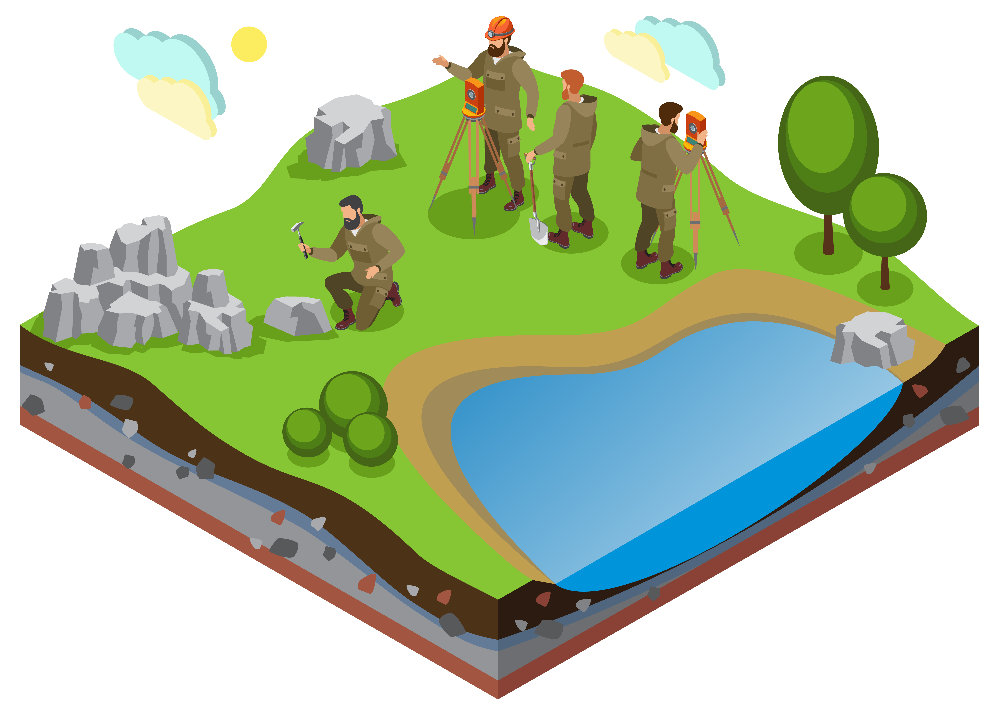

Hola, soy Cristina Becerril

Soy pasante de la Universidad Autónoma del Estado de México en la carrera de Geología Ambiental y Recursos Hídricos, me gustan los temas sobre la Geología Médica, la Educación Ambiental en nuestro país, la conciencia de nuestro consumo y lo que implica una Auditoria Ambiental. Estoy realizando mi tesis de Licenciatura sobre el "Análisis Físico-Químico del agua de lluvia y su problemática en la salud humana"
Desarrollo Web
Conocimiento básico de programación para la creación de páginas web
Cursos y Certificados
Durante mi trayectoria profesional he participado en Cursos de Tecnología y en Certificados de conciencia ambiental
Estudiante
Fui parte de la brigada de primeros auxilios de mi salón, experiencia en prácticas en laboratorio de suelos y analisis de agua.


Cristina Becerril ha desarrollado de manera eficiente sus habilidades en programación front-end, demostró ser una gran estudiante y bastante colaborativa con sus compañeras.
Nancy Salazar
Instructora Front-End en Tecnolochicas PRO..
Durante el programa de Tecnolochicas Pro tuve la oportunidad de trabajar con Cristina Becerril. Una persona muy comprometida y dedicada a mejorar su habilidades en programación web utilizando tecnologías como HTML, CSS, JavaScript y Github. Tiene un gran interés en mejorar profesionalmente día a día y busca destacar en el área IT
Carolina Nava
Gerente de DiseñaMiPáginaWeb
Cristina Becerril muestra un rápido progreso en la adquisición de habilidades técnicas clave y una gran disposición para colaborar en proyectos. Su actitud positiva y su voluntad de aprender constantemente son cualidades valiosas en el campo de la programación. No tengo dudas de que Cristina Becerril seguirá creciendo y haciendo contribuciones significativas como desarrolladora frontend en el futuro.
Anel Montes de Oca Robles.
Mentora de apoyo en Tecnolochicas Pro.